This case study considers a more involved analysis in which the sources of RNA have a factorial structure.
Background. This is a case study examining the development of certain neurons in wild-type and weaver mutant mice from Diaz et al (2002). The weaver mutant affects cerebellar granule neurons, the most numerous cell-type in the central nervous system. Weaver mutant mice are characterized by a weaving gait. Granule cells are generated in the first postnatal week in the external granule layer of the cerebellum. In normal mice, the terminally differentiated granule cells migrate to the internal granule layer but in mutant mice the cells die before doing so, meaning that the mutant mice have strongly reduced numbers of cells in the internal granule layer. The expression level of any gene which is specific to mature granule cells, or is expressed in response to granule cell derived signals, is greatly reduced in the mutant mice.
Tissue dissection and RNA preparation. At each time point (P11 = 11 days postnatal and P21 = 21 days postnatal) cerebella were isolated from two wild-type and two mutant littermates and pooled for RNA isolation. RNA was then divided into aliquotes and labelled before hybridizing to the arrays. (This means that different hybridizations are biologically related through using RNA from the same mice, although we will ignore this here. See Yang and Speed (2002) for a detailed discussion of this issue in the context of this experiment.)
Hybridizations. We have just four arrays each comparing two out of the four treatment combinations of time (11 days or 21 days) by genotype (wild-type or mutant). This has the structure of a 2x2 factorial experiment.
For this example, you will need the file Weaver.lma, which can be downloaded from
http://bioinf.wehi.edu.au/limmaGUI/DataSets.html.
From the file menu, select Open.
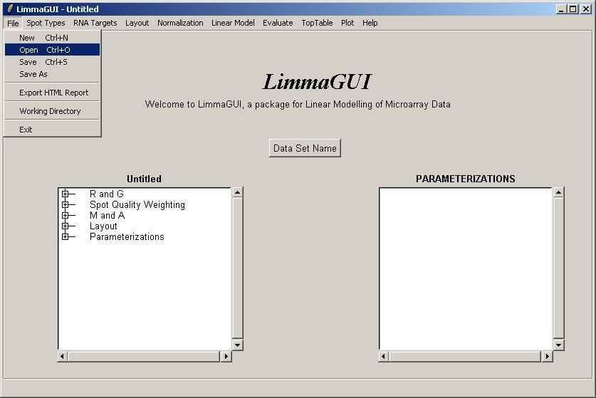Open the file, WeaverArraysLoaded.lma. This file can be downloaded from the URL given above. Advanced users may be interested to know that a Limma (.lma) file is really just an RData file, so it can easily be loaded into an R session. However, it may appear more complicated than standard RData files associated with the limma package because it allows for multiple parameterizations and stores them in a list data structure.
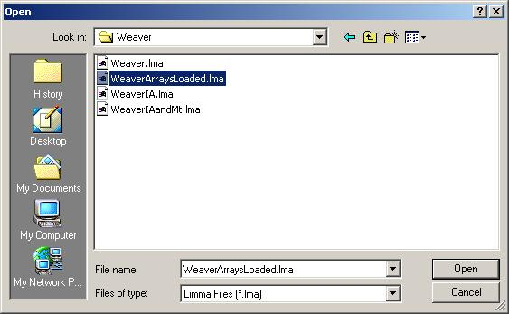Click on "View RNA Targets" in the "RNA Targets" menu. The RNA targets for this data set are displayed below.
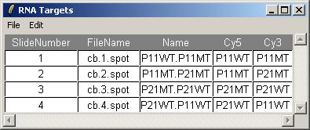Before creating a parameterization, we will plot M values for the different arrays and check whether there is a significant difference in the scale of M values between arrays, which would suggest the need for between-arrays normalization.
From the Plot menu, click on "M Box Plot", choose to plot M values by slide, and choose to normalize within arrays (but not between arrays).
The resulting M box plot is shown below. There are no significant differences in scale between the arrays, so we will not normalize between arrays for this data set.
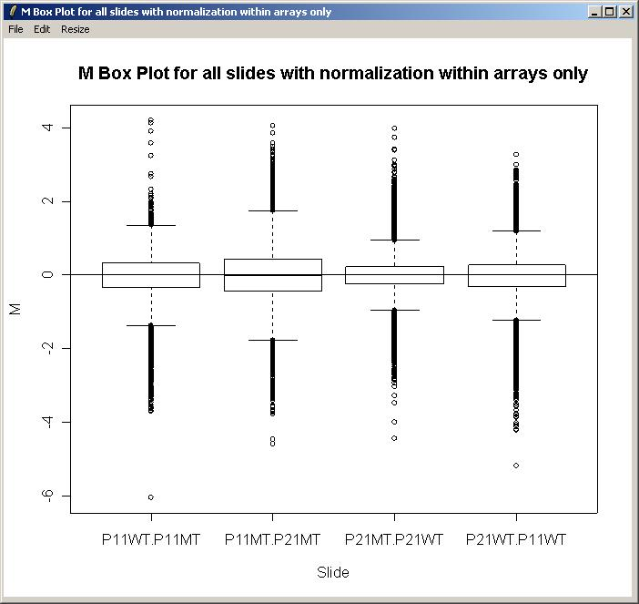Now, click on "Create New Parameterization" in the Linear Model menu.
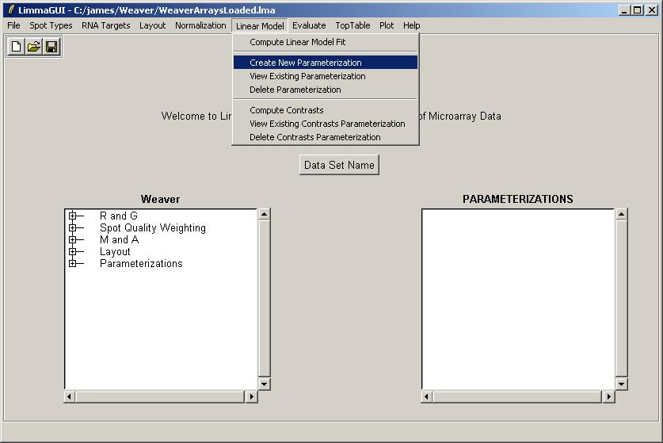Include both genes and controls in the linear model.
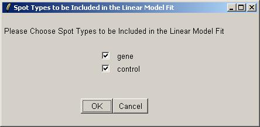Next, click on Advanced.
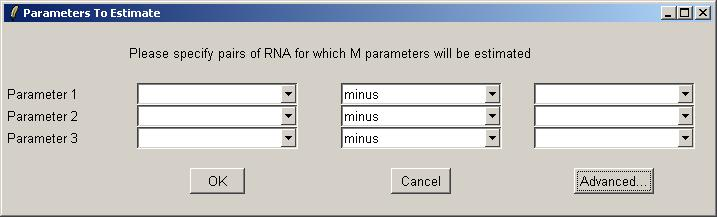The table widget below allows the advanced user to enter a design matrix directly. Click on "Open" from the File menu to open a tab-delimited design matrix file. (A tab-delimited file can be created in a spreadsheet program such as Excel.)
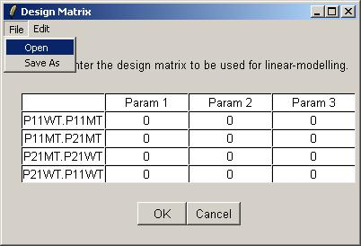Open the file "designIA.txt", which can be found at the URL given above.
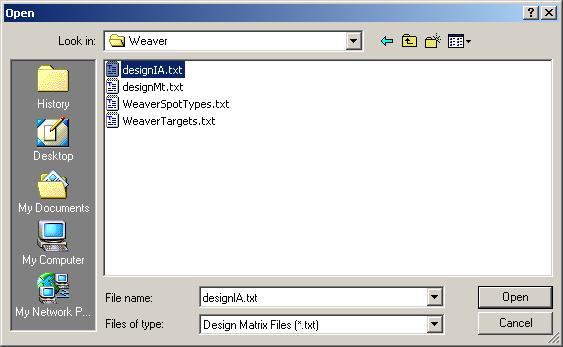The design matrix from "designIA.txt" is now displayed in the table widget. Click OK to accept.
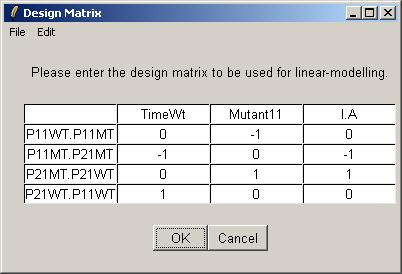Enter a name for this parameterization.
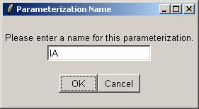The IA parameterization can now be seen in the Parameterizations window.
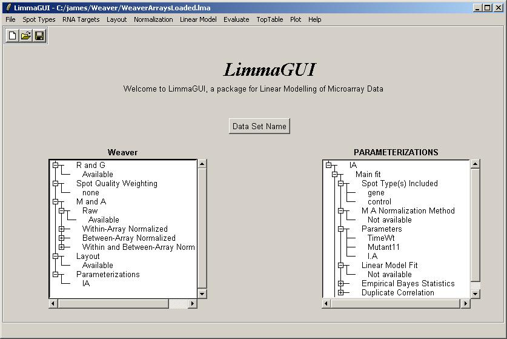Now we will compute a linear model for this set of arrays, using the IA parameterization. After clicking on "Compute Linear Model Fit" from the Linear Model menu, limmaGUI will ask us whether we want to create a new parameterization. Select "No", i.e. we don't want to create a new parameterization, because we want to use the IA parameterization which we have already created.
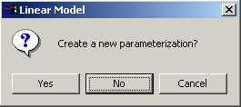There is only one parameterization to choose from, so click OK.
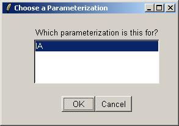Click "Yes" to normalize within arrays, choose "No" to avoid normalizing between arrays and leave the duplicates options at their default values, because we have no duplicates in this data set (dialogs not shown).
After the linear model for IA has been computed, save it as a Limma file.
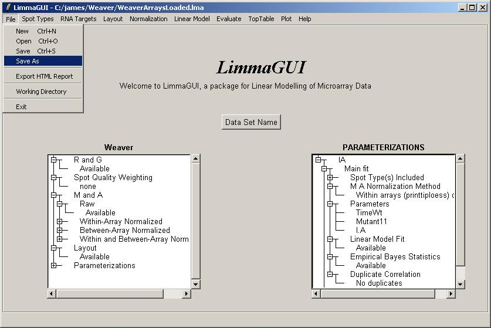Note that we can have multiple Limma files for the same data set, saved at different stages of the analysis. The file name is displayed in the title bar and the data set name is displayed on top of the left status window.
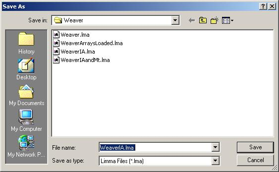We will now request a table of the top genes with the most evidence of differential expression for parameter IA.
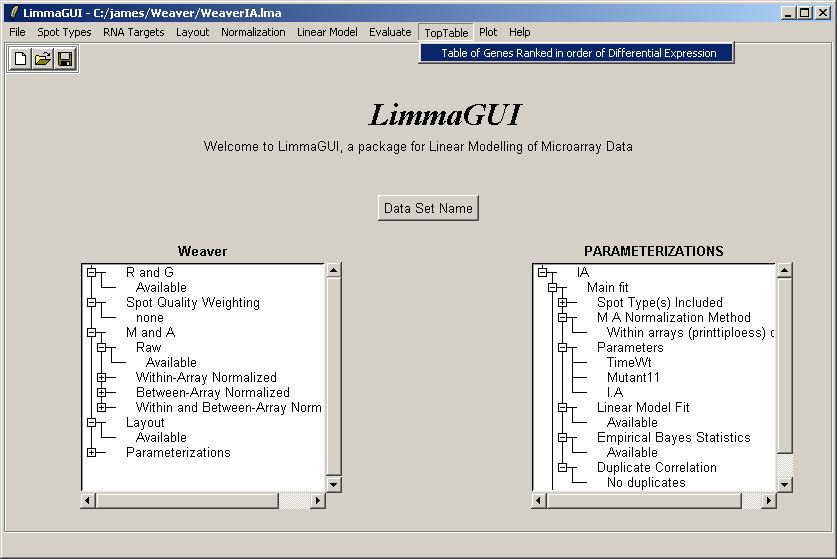IA is the only parameterization, so just click OK.
Select the IA parameter.
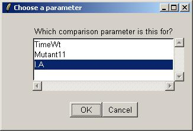The toptable options dialog is not shown, but we will choose to display 10 genes in the table.
The resulting toptable is shown below. It can be saved as a tab-delimited text file, by selecting "Save As" from the File menu. The text file can then be imported into a spreadsheet program such as Excel. There does not appear to be strong evidence of differentially expressed genes, but this is really only a subset of the original data set, so the confidence statistics should not be taken too seriously.
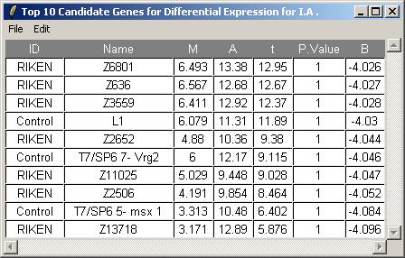Now we will compute a linear model for this set of arrays, using the a different parameterization, which we will call Mt. The steps are the same as for IA, so we will not show all of them. The Mt design matrix is loaded from a tab-delimited text file, obtained from the URL above.
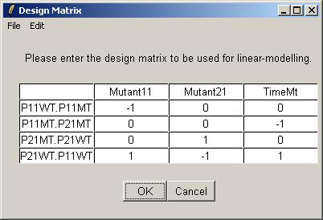Once the linear model has been fitted, the Parameterizations drill-down box shows the Mt parameterization within linear model fit "Available".
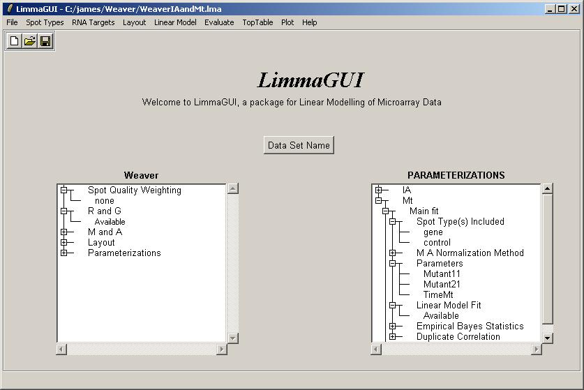We will now plot an M vs M plot (using fitted M values from the linear model) for two of the parameters in the Mt parameterization, Mutant11 and Mutant21.

Choose the Mt parameterization.
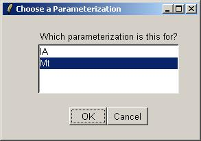The first parameter in the M vs M Plot will be Mutant11.
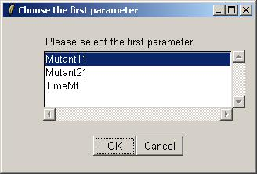The second parameter in the M vs M Plot will be Mutant21.
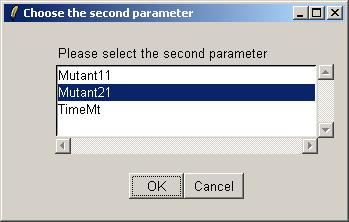We can now choose a cutoff for differentially expressed genes, which will be highlighted in the plot. Choose a cutoff of abs(t)>4.
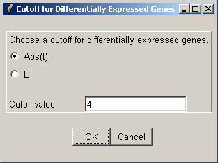The M (Mutant11) vs M (Mutant21) scatter plot is shown below.

This feature has not yet been implemented in a point-and-click way, but we will demonstrate how to combine the results of the two parameterizations and plot a heat diagram, using the "Evaluate" menu. Click on "Evaluate R Code" from the "Evaluate" menu.

Now paste in the following R code:
fitIA <- (ParameterizationList[[1]])$fit fitMt <- (ParameterizationList[[2]])$fit fit <- fitIA fit$coefficients <- cbind(fitIA$coef,fitMt$coef) fit$coefficients <- fit$coef[,c(1,2,3,4,5,6,)] fit$stdev.unscaled <- cbind(fitIA$stdev.unscaled,fitMt$stdev.unscaled) fit$stdev.unscaled <- fit$stdev.unscaled[,c(1,2,3,4,5,6,)] eb <- ebayes(fit) heatdiagram(abs(eb$t),fit$coef,"Mutant21",names=gal$Name)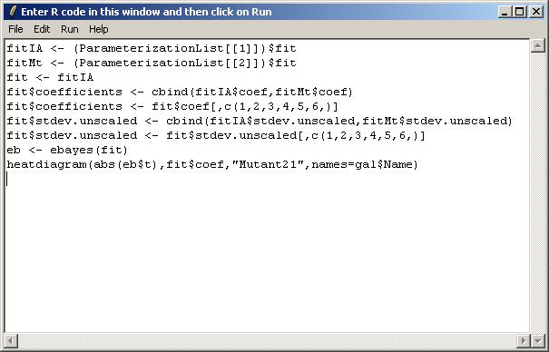
After typing in the R code, select "Show Graphical Results only" from the Run menu.
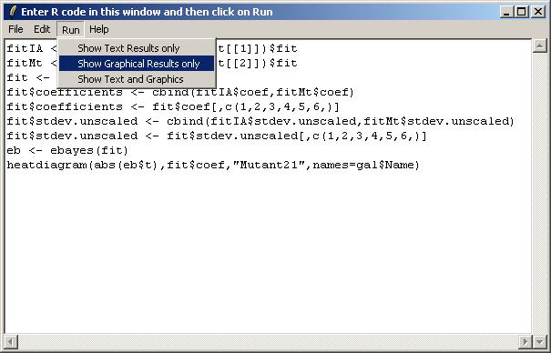Click on "Resize Window" from the "Resize" menu to choose appropriate plot scalings for the heat diagram (which is very wide and not very high).
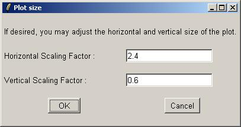The heat diagram is shown below.
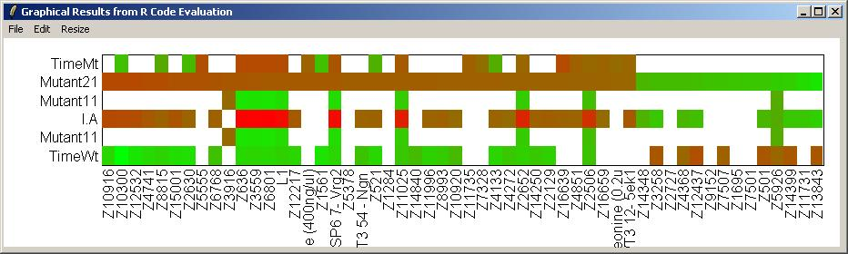